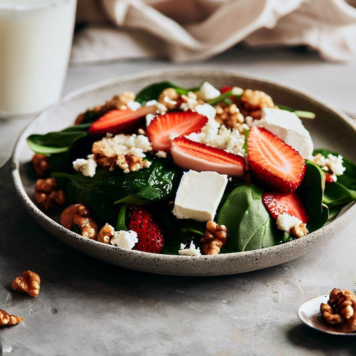

Salades
Salade d'Épinards et de Fraises

La salade d'épinards et de fraises est une combinaison rafraîchissante et délicieuse de saveurs sucrées et salées.
Elle met en valeur des épinards frais et croquants associés à des fraises juteuses, le tout rehaussé par des oignons rouges finement tranchés, du fromage de chèvre crémeux et des noix croquantes.
Chaque bouchée est un équilibre parfait de textures et de goûts. Cette salade colorée et nutritive est une excellente source de vitamines et de minéraux essentiels. Parfaite pour un déjeuner léger, une entrée élégante ou un accompagnement frais !
Préparation
15 min
Cuisson
Aucune
Portions
6
Niveau
Facile
Calories
200 kcal
Ingrédients
- 250g d'épinards frais
- 500g de fraises fraîches
- 1/2 oignon rouge, finement tranché
- 100g de fromage de chèvre, émietté
- 50g de noix, grossièrement hachées
Pour la vinaigrette :
- 3 cuillères à soupe d'huile d'olive
- 2 cuillères à soupe de vinaigre balsamique
- 1 cuillère à soupe de miel
- Sel et poivre au goût
Ustensiles nécessaires
- Un grand saladier
- Un couteau de cuisine
- Une planche à découper
- Une passoire (optionnel)
- Un fouet
- Des couverts
Préparation
- Lavez soigneusement les épinards et les fraises. Égouttez-les et séchez-les délicatement à l'aide d'un torchon propre ou d'une essoreuse à salade.
- Dans un grand saladier, disposez les épinards et les fraises. Ajoutez les tranches d'oignon rouge, le fromage de chèvre émietté et les noix hachées.
- Préparez la vinaigrette en mélangeant l'huile d'olive, le vinaigre balsamique, le miel, le sel et le poivre dans un petit bol. Fouettez bien pour obtenir une vinaigrette homogène.
- Versez la vinaigrette sur la salade et mélangez délicatement pour enrober tous les ingrédients.
- Laissez reposer la salade au réfrigérateur pendant environ 15 minutes pour permettre aux saveurs de se mélanger.
- Juste avant de servir, remuez légèrement la salade pour s'assurer que la vinaigrette est bien répartie.
- Servez la salade d'épinards et de fraises fraîche et garnissez-la éventuellement de quelques noix supplémentaires pour plus de croquant.
Accompagnements suggérés
- Curry de courgettes et de pois chiches : pour un repas savoureux.
- Grains ou légumineuses : quinoa, riz sauvage, pois chiches ou lentilles pour une salade plus rassasiante.
- Protéines végétales : tofu grillé, graines de chia ou noix supplémentaires.
- Avocat : ajoutez des tranches d'avocat pour une texture crémeuse.
Profitez-en !